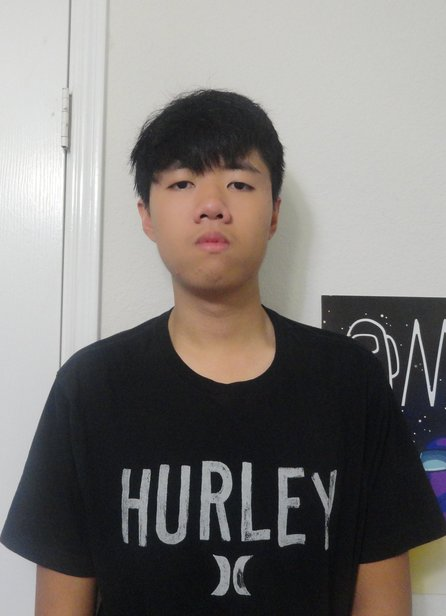

This site is made by me, Luke Nguyen, I was born in 2007.
The PRW in JuanSeguinPRW stands for Pep Rally; Walkout.
I made this site to put together my collection of videos I took on the JSHS walkouts and pep
rallies. I filmed all of the events because I was/am bored and I figured this would be a great
dedication collection.
This is a collection of the JSHS Walkout and Pep Rallies from August 2021 to May 2025.
The cameras I used are: the Canon T5i, Samsung S7, Samsung S9, Samsung A32 5G, and iPhone 4. The video editing
softwares I used are Powerdirector and Kdenlive.
The source code of this website is available on Github: https://github.com/KuleGuy27/juanseguinprw